An n8n and HubSpot integration that checks contacts are safe to email and researches each company before a sales call.
When a company scores highly against the ICP, HubSpot marks its decision-makers as Ready. n8n polls the HubSpot API for those contacts, runs five safety checks in JavaScript, writes the result back to HubSpot and logs it to PostgreSQL. For companies that pass, it reads the website with Jina and Gemini and posts a sales brief to the company record.
Before reaching out, it is important for an SDR to know about each practice: what it offers, what it charges and who to speak to. Researching every practice’s website by hand takes time, and without that research, calls and emails tend to be generic.
Built with SDRs in mind, this workflow takes manual account research off their plate. Instead of searching each practice’s website before reaching out, an SDR opens the company record in HubSpot and finds a sales brief already waiting, covering the practice’s services, prices, team size, current offers and the payment options they use. The brief includes talking points tied to real facts from the website, so calls and emails can be specific to that practice rather than generic. It also suggests the best way to get in touch, using whatever the website shows, such as the main phone number, an enquiry form or, where staff are listed, the practice manager’s name, so the SDR knows who to ask for when they call.
n8n runs locally, so HubSpot can’t push events to it. Instead, n8n polls the HubSpot API on a schedule (a manual trigger while testing) for contacts whose custom Outbound status property is Ready.
Synthetic HubSpot dataset of Greater Manchester dental practices. The website research was tested on a real Manchester dental practice’s website.
Each box shows which tool does the step. The dashed box is where a contact leaves the flow.
A company scores above 70 against the ideal customer profile.
Decision-makers get the custom Outbound status property set to Ready.
Searches for Ready contacts, then follows each contact to its company.
Valid email, not opted out, not a customer, no open deal, not contacted in 30 days.
Every decision is written to the safety_gate_log table.
Written back to the contact with a PATCH request.
Reads the site, picks up to 6 pages, rejects invented URLs.
Saved as a note on the company record.
Written back to the contact. Not emailed, not researched.
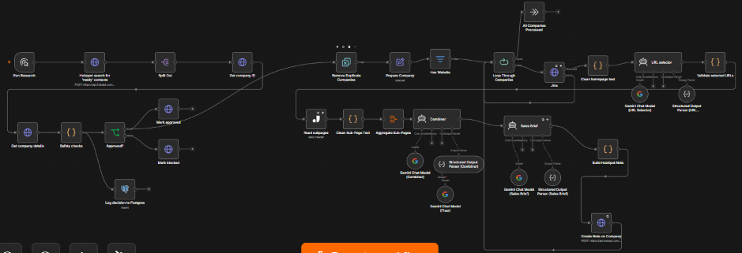
Built with HTTP Request nodes calling the HubSpot API directly. Every call was tested in Postman first.
POST /crm/v3/objects/contacts/search filtered on Outbound status = Ready. A Split Out node turns the list into one item per contact.
GET /crm/v4/objects/contacts/{id}/associations/companies uses HubSpot associations to find the company ID, then GET /crm/v3/objects/companies/{id} reads the company.
A JavaScript Code node checks: valid email, not opted out, not an existing customer, no open deal, not contacted in the last 30 days. It returns a decision and a reason code that matches a HubSpot dropdown.
An IF node sends the contact to “Mark approved” or “Mark blocked”, each a PATCH request to the HubSpot API.
Every decision is inserted into a PostgreSQL table, safety_gate_log, with a timestamp, contact, company, decision and reason.
Fewer API calls: the workflow reads HubSpot’s calculated “Number of open deals” property on the company instead of fetching every deal.
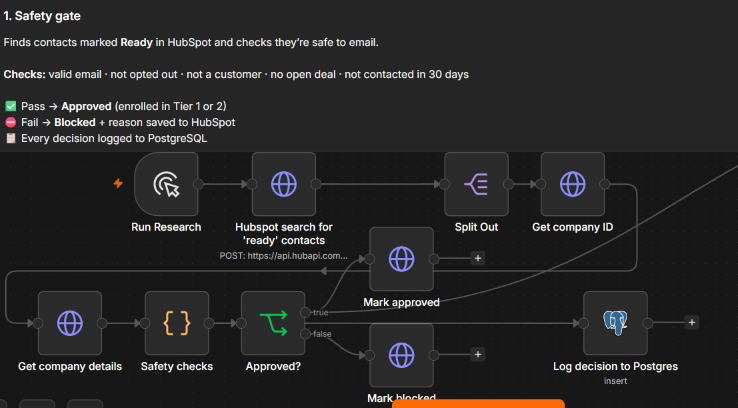
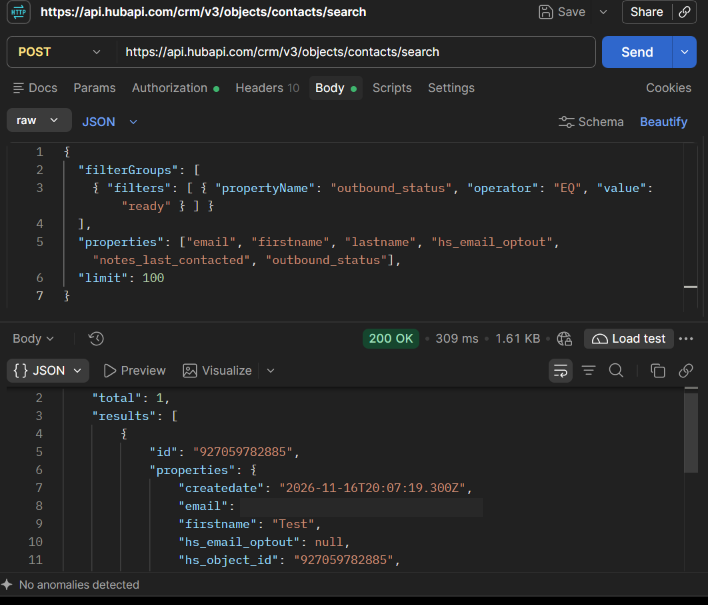
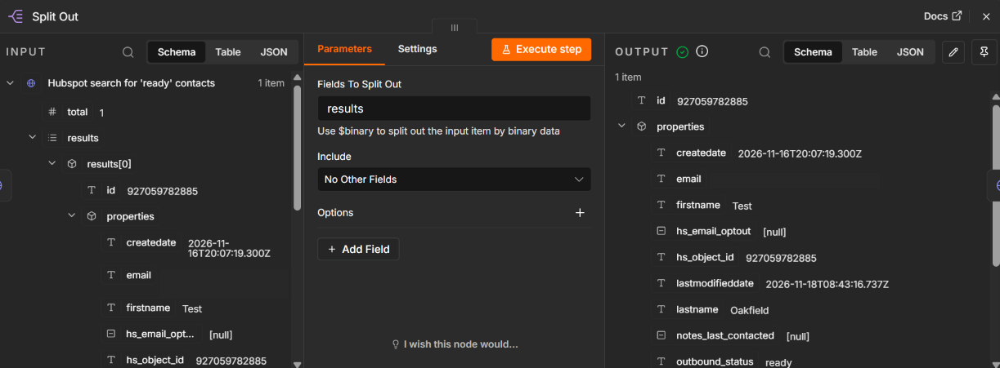
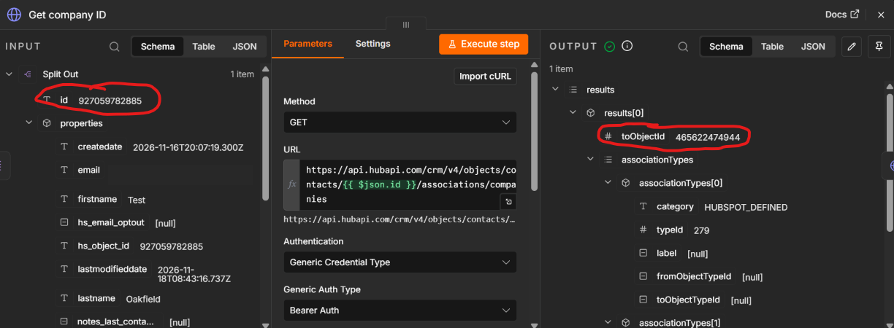
A PostgreSQL table gives a record of who was approved or blocked and why, which can be queried with SQL. Managed in DBeaver.
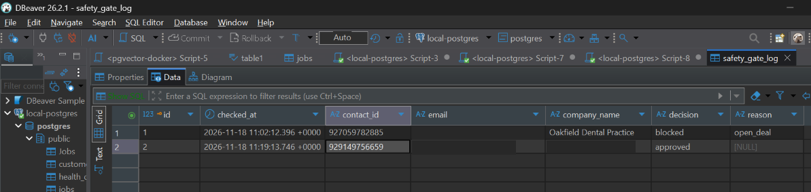
Runs only for approved companies. n8n reads the website with Jina, uses Gemini to choose pages and extract facts, and posts the result through the HubSpot API.
Duplicate companies are removed, so several contacts at one practice trigger one research run.
Jina reads the homepage and collects its links. Gemini picks up to 6 pages from the real link list.
A validation step drops any URL the AI made up. Failed pages are skipped without stopping the run.
One AI step pulls out verified facts, each with the URL it came from.
A second AI step writes a headline, overview, talking points, how to reach them and what’s still unknown. It is posted as a note on the company with POST /crm/v3/objects/notes.
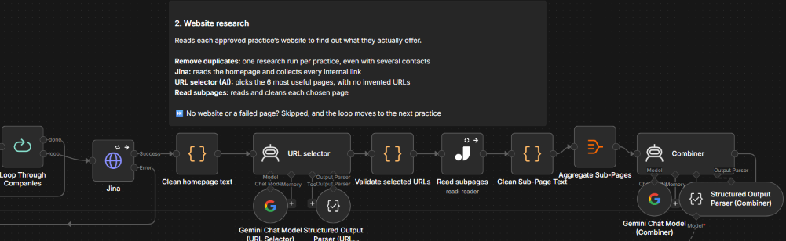
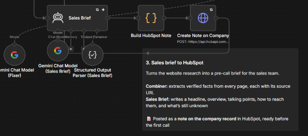
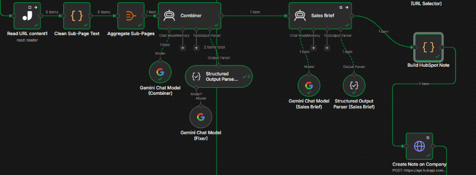
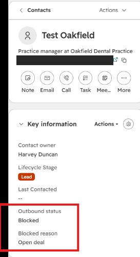
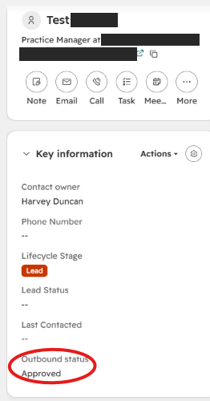
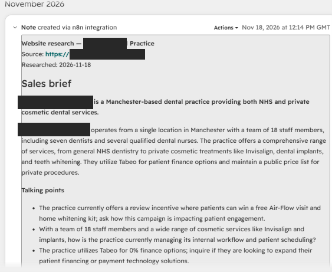
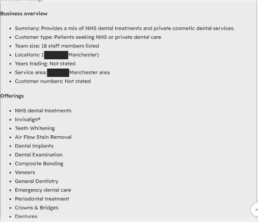
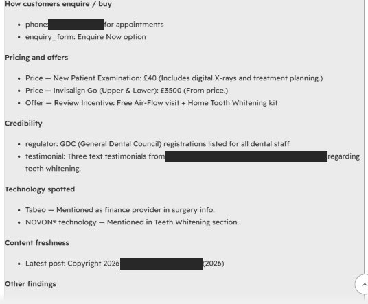
Tested on a real Manchester dental practice’s website. The practice name and identifying details are redacted.
A HubSpot service key with only the scopes the workflow needs, stored in n8n as a Bearer credential restricted to api.hubapi.com. Every API call was tested in Postman first.
| Orchestration | n8n (self-hosted) |
| CRM | HubSpot REST API (v3, v4 associations) |
| Code | JavaScript |
| Database | PostgreSQL · SQL · DBeaver |
| Web research | Jina Reader |
| AI | Google Gemini |
| API testing | Postman |